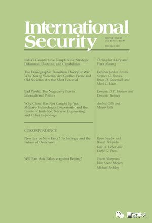

收录于合集 #理论研究 96个

简 介
【 作者 】
Davide Fiammenghi：达维德·菲亚门吉，博洛尼亚大学政治学院副院长，2012年出版著作《多极系统：历史和理论分析》。主要研究领域：国际冲突。
Sebastian Rosato,：圣母大学政治学副教授，他是《欧洲联合：权力政治和欧洲共同体的形成》一书的作者，主要研究国际关系理论。
Joseph M. Parent：圣母大学国际关系副教授，主要研究国际关系理论、安全研究、大战略、外交政策。
Jeffrey W. Taliaferro：塔夫斯大学政治学副教授，主要研究领域：安全研究，国际关系理论，国际历史和政治，美国外交政策，情报和美国国家安全。
【 编译 】 **王国欣 ；徐琛 **
【 校对 】 赵炜婷
【 来源 】
Davide Fiammenghi, Sebastian Rosato and Joseph M. Parent, Jeffrey W. Taliaferro, Steven E. Lobell, and Norrin M. Ripsman, Kevin Narizny. Correspondence: Neoclassical Realism and Its Critics. International Security Fall 2018, Vol. 43, No. 2, pp. 193–203.
【 期刊简介 】
《国际安全》（International Security）是国际和国家安全领域的同行评议学术期刊。它成立于1976年，由哈佛大学贝尔弗科学与国际事务中心(Belfer Center for Science and International Affairs at Harvard University)编辑，麻省理工学院出版社(MIT Press)每年出版四次。2017年影响力因子为4.135，在“国际关系”类别的85种期刊中排名第2位。

核心观点
本文总共分为四个部分，前三部分是菲亚门吉等学者对2017年纳里兹尼在《论体系范式与国内政治》一文中对新古典现实主义批判的回应，最后一部分是纳里兹尼的进一步解释。其争论的焦点主要集中在两个方面：一、将国内变量纳入到新古典现实主义中是否符合现实主义的基本假设；二、自由主义和新古典现实主义的解释力。
文章导读
** ** Davide Fiammenghi:****
总体 观点： 纳里兹尼对现实主义的理解（国家功能相似意味着国家偏好相同；华尔兹仅提供了三个假设：均势、效仿成功的革新、两极比多极更稳定）存在缺陷；认为现实主义要么少谈国家偏好要么放弃现实主义的观点是错误的。
作者 观点 ： 华尔兹提供的假设还有很多，作者列出了八点假设并认为：首先，这些假设挑战了国家偏好不会变化以及以相同方式界定安全的观点。其次，华尔兹认为安全目标和不同偏好是可以共存的，而结构性限制会受到国家的偏好、地理位置以及国家规模大小的影响。最后国家实力的变化会影响其偏好。
未来学术研究应该关注（1）国家的偏好如何变化，具有不同偏好的国家如何以及为何会受到不同安全限制的影响？（2）国家的地理位置和规模如何影响国家所面临的安全限制？（3）国家权力地位的变化如何重塑其偏好？
** ** Sebastian Rosato and Joseph M. Parent:****
辩论 的对象 ：纳里兹尼认为过去三十年的研究在促进学界对外交政策尤其是制衡行为的理解上成果有限；新古典现实主义之所以具有本质缺陷是因为不能解释体系变量和国内变量的因果重要性；解决方法是探索关注偏好的自下而上的理论。
作者 观点 ：作者认为还有两个问题值得现实主义和自由主义反思，以及就制衡行为而言，结构比偏好更能提供成功的解释。
首先，纳里兹尼除了提到不同变量的因果重要性之外，还提出了两个重要问题：演绎逻辑的一致性和缺乏系统的经验证据使比较竞争性理论的解释力变得不可能。
其次，虽然自下而上和自上而下是两种有效的分析方式，但作者从自上而下的分析方式出发，认为无政府状态导致国家通过自助或联盟来实现安全，但自助更加重要。在对1816年到1990年间大国行为的分析中发现，大多数国家会通过军备建设或创新来来应对无政府体系下的挑战，只有六个明显借助外部联盟的案例。因此，就大国制衡行为而言，体系因素的解释比国内政治因素的解释更符合历史记录。最后作者认为在今后的研究中学者们应该关注变量的因果重要性、逻辑演绎的一致性和系统经验证据的重要性，只有这样才能提高我们对国家行为的理解。
** ** ** Jeffrey W. Taliaferro, Steven E. Lobell, and Norrin M. Ripsman******
辩论的对象： 纳里兹尼认为新古典现实主义因为违背了拥有相同目标和功能相同这两个核心假设而不是现实主义。
作者的回应：首先，纳里兹尼所谓的现实主义核心假设与其他学者所提出的现实主义核心假设不同，其他学者并没有强调国家功能相同这一假设。此外，作者不同意纳里兹尼认为现实主义要求国家偏好不变的假设，因为沃尔兹也没有强调国家具有完全相同的偏好，只是在无政府状态下安全和生存目标高于其他目标而已。新古典现实主义认为外交政策是为了实现三组目标：(1)维护国家存和政治自主；(2)保持权力地位；(3)保护可能包括意识形态、宗教、政治、社会和经济等方面的目标。在包容性战略环境中国家可能会关注第二和第三类目标；但在约束性战略环境中，国家关注第一类目标。尽管偏好不同，但体系约束对各国的外交政策产生了独立的影响。
其次，自由主义并没有有效地将体系因素纳入到解释中去，而新古典现实主义则吸引了更多的关注，因为其更好地抓住了各国面临的体系和地区层面的约束与机遇。自由主义的问题包括(1)不能有效解释那些面临不同社会和跨国约束条件的非自由主义国家的行为；(2)不能有效解释位于非自由地区的自由国家的行为；(3)因为忽视权力分配而不能有效解释中等国家尤其是弱国的行为；（4）自由主义是目的论和规范性的，认为历史是进步的以及自由国家比其他政权的国家更好等。而新古典自由主义则没有这些缺陷。
** ** ** ** Kevin Narizny:********
只有托利弗三人为新古典现实主义进行辩护，但他们并没有解决作者所提出的问题。首先，作者之所以采用帕特里克对现实主义的界定，是因为他是基于科学哲学来评价理论范式的逻辑一致性和进步性的，而这也正是作者评价新古典现实主义的目的。作者关注的是科学的新现实主义标准，而托里弗等人所参考的四篇替代性文章中只有米尔斯海默符合当代现实主义的标准，但米氏也强调国家是偏好不变的单元。此外，托利弗三人的书中也存在矛盾的表述，如“国际体系促使国家成为安全寻求者，但不能武断地认为所有国家都有相同的利益或国际体系决定这些国家利益是什么”。“在极端情况下，当面临下台的紧迫威胁时，领导人可能会暂时关注国内政治地位，如果国家安全的损失不是那么大的话。”这句话中“下台的紧迫威胁”是什么？如何操作化？什么叫做“急迫”？这所有都依赖于领导人的认知，因而不可证伪。其次，对于新古典现实主义对自由主义忽视体系因素的指责，作者认为莫劳夫奇克已经说明了国家领导人如何适应影响社会联盟利益的外部压力这一问题，因而自由主义并没有忽视体系因素。针对托利弗等人指责自由主义不能解释非自由国家的行为，作者认为自由主义关注的社会联盟不仅仅局限在自由国家之中，而且已经有很多研究专制国家外交政策的成果。针对托利弗等人对自由主义是目的论和规范性的指责，作者认为自己谈论的是科学化后的自由主义——以莫劳夫奇克为代表，而托利弗等人谈论的是古典自由主义。
对菲亚门吉的回应：首先，对于国际功能相似并不意味着偏好相同的批评在回应托利弗等人时已经回答。其次，可以从沃尔兹的书中得到很多假设是正确的，但这并没有挑战作者的结论。菲亚门吉的观点符合帕特里克提出的现实主义的范畴，因而与作者批判新古典现实主义的观点无关。最后，针对菲亚门吉“寻求安全可以和不同偏好并存”的观点，作者认为他误解了偏好这一概念。偏好是潜在的目标，而战略是实现目标的手段，菲亚门吉所理解的偏好其实是战略。
对罗萨托和帕伦特的回应：首先，所提出的观点只和作者的文章略有触及，因而只回应两点。其次，对于罗萨托二人认为作者提到过去三十年中的研究对于理解外交政策成果不多的观点，作者澄清到自己仅提到90年代以来，因而不是三十年。并且作者不是否定新古典现实主义的价值，而是认为分析方法限制了新古典现实主义所能实现的价值。最后，对于罗萨托二人提到了大国会通过军备建设和创新来回应威胁的观点，作者认为自由主义理论不仅仅解释国家如何回应威胁，更为重要的是解释国家如何界定利益。罗萨托二人发现体系理论在解释这些历史案例时更加合适，但他们的研究中还遗留着尚未回答的深层问题。
扫描下方小程序码查看原文p df

本文由国政学人微信公众平台编译首发
更多阅读
【国关理论】IS杂志重磅：论体系范式和国内政治 | 国政学人
【国关理论】兰德尔·施韦勒：新古典现实主义与中美关系的未来 | 国政学人
国政学人 （ID：guozhengxueren)
为方便学人及时阅读高质量文章
别忘把国政学人设置 星标 哦~